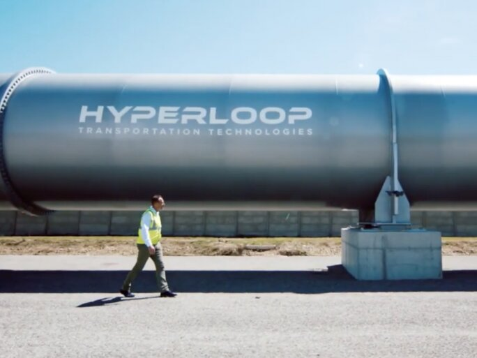

Logros de Elon Musk
Cofundador de Paypal
Musk cofundó X.com, una empresa de pagos en línea que posteriormente se convirtió en PayPal, revolucionando las transacciones digitales.
Fundación de SpaceX
Estableció SpaceX con el objetivo de reducir los costos de los viajes espaciales y facilitar la colonización de Marte. La empresa ha desarrollado cohetes reutilizables y ha realizado múltiples misiones exitosas.
Desarrollo de Tesla Motors
Como inversor principal y posteriormente CEO, Musk impulsó la producción de vehículos eléctricos de alta calidad, popularizando su uso a nivel mundial.
Creación de SolarCity
Fundó SolarCity, una empresa dedicada a la energía solar, promoviendo soluciones energéticas sostenibles para hogares y empresas.
Lanzamiento de The Boring Company
Estableció esta empresa para construir túneles subterráneos destinados a aliviar la congestión del tráfico urbano mediante sistemas de transporte innovadores.
Desarrollo de Neuralink
Fundó Neuralink, una empresa enfocada en la creación de interfaces cerebro-computadora para tratar enfermedades neurológicas y, eventualmente, potenciar las capacidades humanas.
Implementación de Starlink
A través de SpaceX, lanzó una constelación de satélites para proporcionar internet de alta velocidad en áreas remotas y de difícil acceso.
Primer vuelo tripulado de SpaceX
SpaceX se convirtió en la primera empresa privada en enviar astronautas a la Estación Espacial Internacional, marcando un hito en la exploración espacial comercial.
Adquisición de Twitter
Musk adquirió la plataforma de redes sociales Twitter, ampliando su influencia en el ámbito de la comunicación digital.
Hyperloop
Musk propuso el concepto del Hyperloop, un sistema de transporte de alta velocidad que utiliza cápsulas que se mueven en tubos de baja presión.
Energía sostenible con Tesla Powerwall
Tesla introdujo el Powerwall, una batería doméstica que almacena energía generada por paneles solares o de la red eléctrica para su uso posterior.
Desarrollo del cohete Starship

SpaceX está desarrollando Starship, un sistema de transporte totalmente reutilizable diseñado para llevar tripulación y carga a la Luna, Marte y más allá.